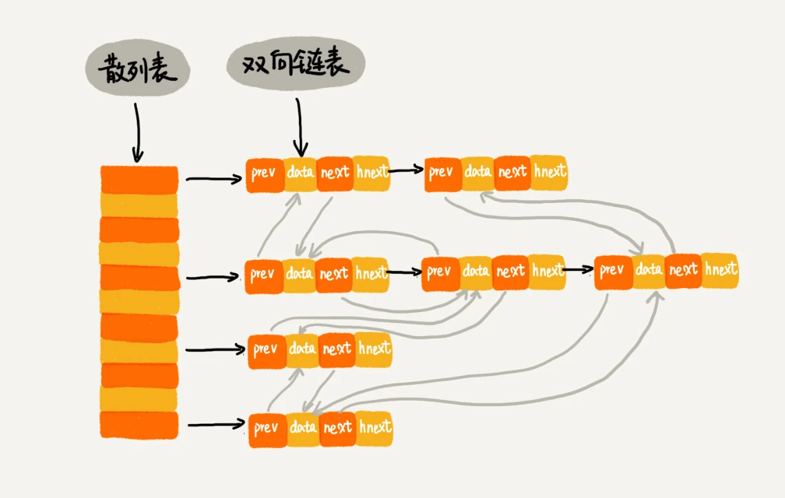

LRU 缓存淘汰算法
如何借助散列表把 LRU 缓存淘汰算法的时间复杂度降低为 O(1)？
实现方式：
维护一个按照访问时间从大到小有序排列的链表结构。因为缓存大小有限，当缓存空间不够，就直接将链表头部的结点删除。
当要缓存某个数据的时候，先在链表中查找这个数据。如果没有找到，则直接将数据放到链表的尾部；如果找到了，就把它移动到链表的尾部。因为查找数据需要遍历链表，所以单纯用链表实现的 LRU 缓存淘汰算法的时间复杂很高，是 O(n)。
实际上，一个缓存（cache）系统主要包含下面这几个操作：
- 往缓存中添加一个数据
- 从缓存中删除一个数据
- 在缓存中查找一个数据
这三个操作都要涉及“查找”操作，如果单纯地采用链表的话，时间复杂度只能是 O(n)。如果将散列表和链表两种数据结构组合使用，可以将这三个操作的时间复杂度都降低到 O(1)。具体的结构就是下面这个样子：

使用双向链表存储数据，链表中的每个结点处理存储数据（data）、前驱指针（prev）、后继指针（next)之外，还新增了一个特殊的字段 hnext。
因为散列表是通过链表法解决散列冲突的，所以每个结点会在两条链中。一个链是双向链表，另一个链是散列表中的*拉链。前驱和后继指针是为了将结点串在双向链表中，hnext 指针是为了将结点串在散列表的拉链中**。
如何将缓存的三个操作做到时间复杂度 O(1)
如何查找一个数据
散列表中查找数据的时间复杂度接近 O(1)，所以通过散列表，可以很快地在缓存中找到一个数据。当找到数据之后，还需要将它移动到双向链表的尾部。如何删除一个数据
需要找到数据所在的结点，然后将结点删除。借助散列表，可以在 O(1) 时间复杂度里找到要删除的结点。因为链表是双向链表，双向链表可以通过前驱指针 O(1) 时间复杂度获取前驱结点，所以在双向链表中，删除结点只需要 O(1) 的时间复杂度。如何添加一个数据
添加数据到缓存稍微有点麻烦，需要先看这个数据是否已经在缓存中。如果已经在其中，需要将其移动到双向链表的尾部；如果不在其中，还要看缓存有没有满。如果满了，则将双向链表头部的结点删除，然后再将数据放到链表的尾部；如果没有满，就直接将数据放到链表的尾部。这整个过程涉及的查找操作都可以通过散列表来完成。其他的操作，比如删除头结点、链表尾部插入数据等，都可以在 O(1) 的时间复杂度内完成。所以，这三个操作的时间复杂度都是 O(1)。至此，就通过散列表和双向链表的组合使用，实现了一个高效的、支持 LRU 缓存淘汰算法的缓存系统原型。
Redis 有序集合
在有序集合中，每个成员对象有两个重要的属性，key（键值）和 score（分值）。不仅会通过 score 来查找数据，还会通过 key 来查找数据。
举个例子，比如用户积分排行榜有这样一个功能：可以通过用户的 ID 来查找积分信息，也可以通过积分区间来查找用户 ID 或者姓名信息。这里包含 ID、姓名和积分的用户信息，就是成员对象，用户 ID 就是 key，积分就是 score。
Redis 有序集合的操作包括：
- 添加一个成员对象
- 按照键值来删除一个成员对象
- 按照键值来查找一个成员对象
- 按照分值区间查找数据，比如查找积分在[100, 356]之间的成员对象
- 按照分值从小到大排序成员对象
如果仅仅按照分值将成员对象组织成跳表的结构，那按照键值来删除、查询成员对象就会很慢，解决方法与 LRU 缓存淘汰算法的解决方法类似。可以再按照键值构建一个散列表，这样按照 key 来删除、查找一个成员对象的时间复杂度就变成了 O(1)。同时，借助跳表结构，其他操作也非常高效。
为什么散列表和链表经常一块使用？
散列表这种数据结构虽然支持非常高效的数据插入、删除、查找操作，但是散列表中的数据都是通过散列函数打乱之后无规律存储的。也就说，它无法支持按照某种顺序快速地遍历数据。如果希望按照顺序遍历散列表中的数据，需要将散列表中的数据拷贝到数组中，然后排序，再遍历。
因为散列表是动态数据结构，不停地有数据的插入、删除，所以每当希望按顺序遍历散列表中的数据的时候，都需要先排序，那效率势必会很低。为了解决这个问题，将散列表和链表（或者跳表）结合在一起使用。